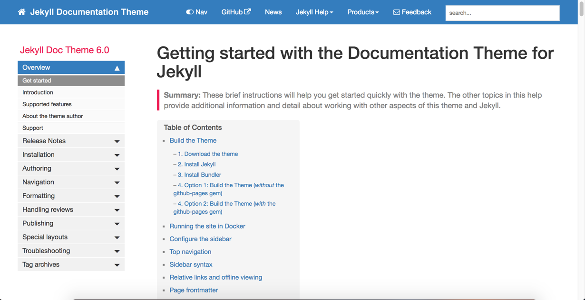
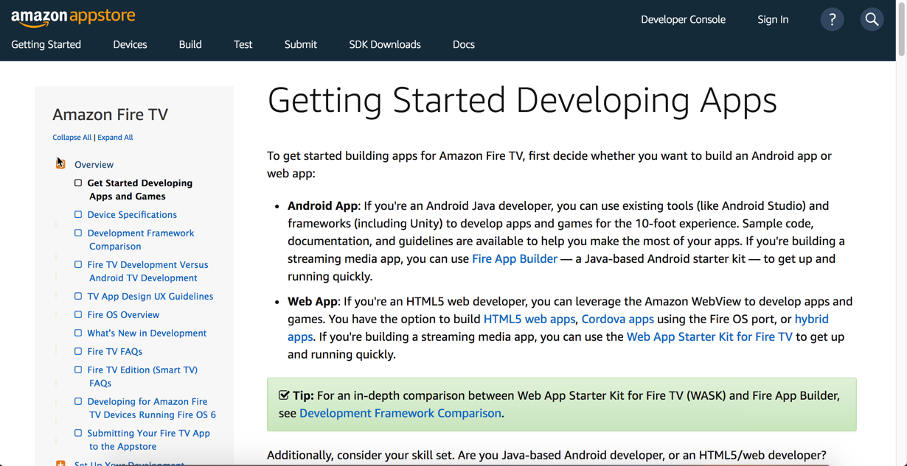
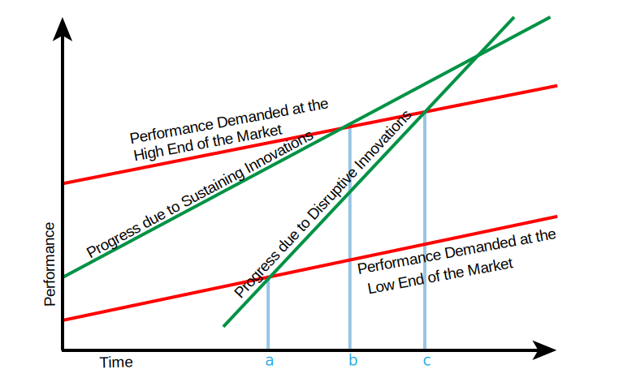
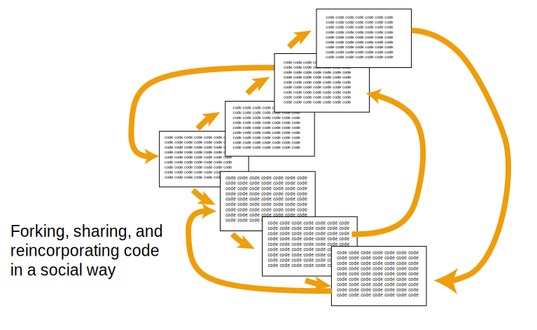
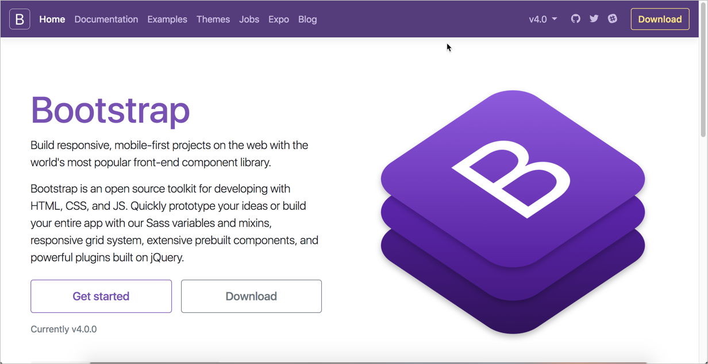
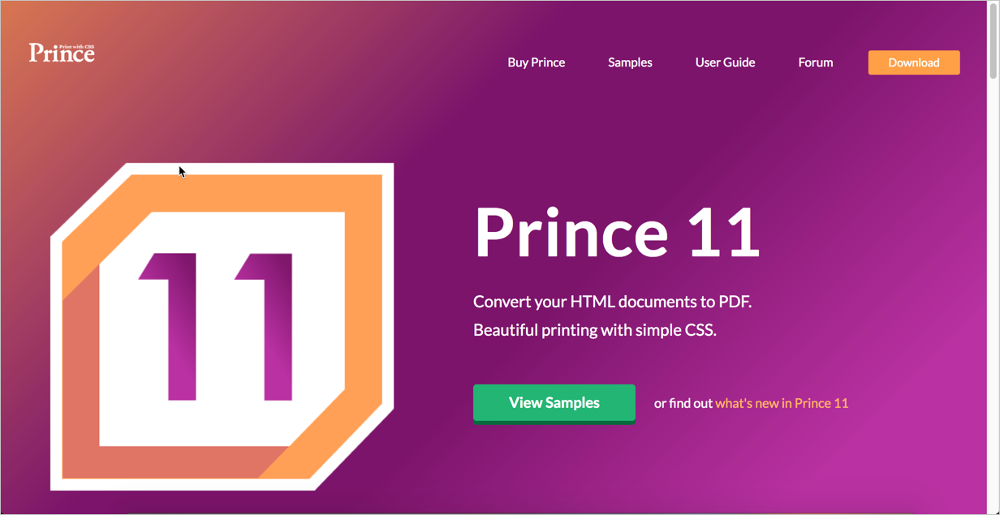
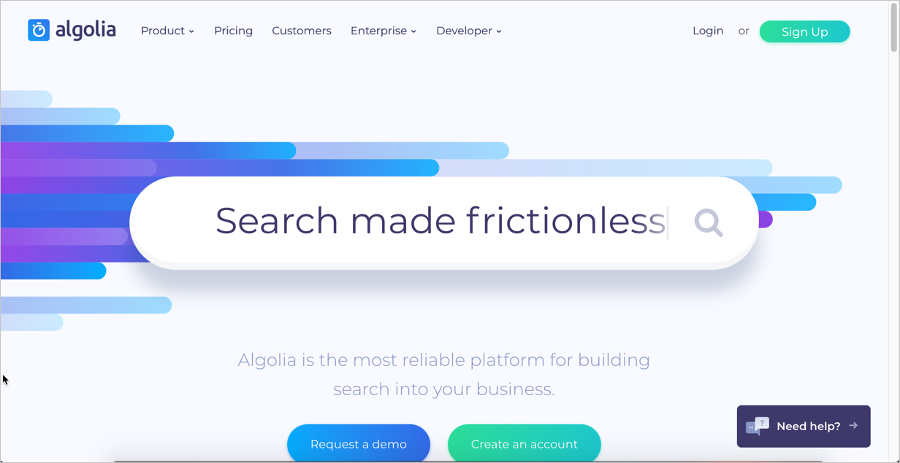
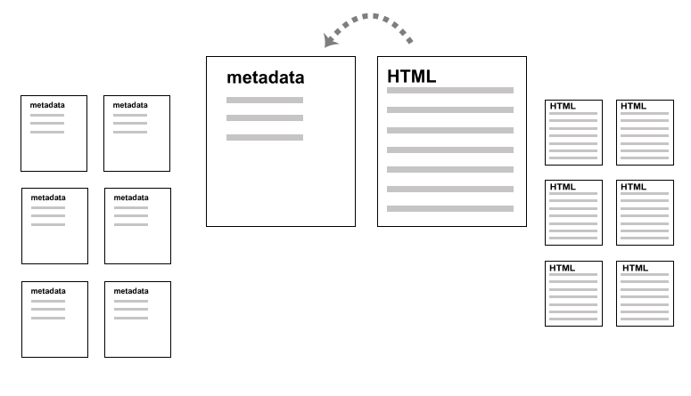

Docs-as-code
tools and workflows
By Tom Johnson / @tomjohnsonSlides: http://idratherbewriting.com/docs-as-code-tools-and-workflows
What I'll talk about
- Why docs-as-code is trending
- Scenarios where docs-as-code works well
- Common tools and workflows
- Challenges and pain points in this space
- Experiences in implementing docs-as-code
- Reflections on maturity and momentum
"Blogging like a hacker"
"On Sunday, October 19th, I sat down in my San Francisco apartment with a glass of apple cider and a clear mind. After a period of reflection, I had an idea. While I'm not specifically trained as an author of prose, I am trained as an author of code. What would happen if I approached blogging from a software development perspective?"— Blogging like a hacker, Tom Preston-Werner, co-founder of Github
What would happen if we approached software documentation from a software development perspective?
Getting rid of the database
What is docs as code
- Plain text files (.md)
- Static site generators
- Text editors (Atom)
- Git for file mgmt/collab.
- Continuous publishing
- Validation scripts
Why this started happening
Doc sites built using docs-as-code
Demo of how it works
< exit slides >Top static site generators
Complaints from DITA people
- No standards
- No semantics
- Not robust enough
- No PDF
- Poor localization workflow
Case study I: Implementing docs-as-code at Experian
Requirements
- Move out of Confluence exporting workflow
- Publish to modern-looking website
- Separate outputs by audience (Java, PHP, C++)
- Re-use content across multiple outputs
- Maintain versions for each release
- Handle authentication via Salesforce
- Provide PDF output for pre-sales distribution
Solutions
- Use Bootstrap to develop modern-looking theme
- Store and manage content in company's VCS
- Separate config files for different outputs
- Use Prince XML for PDF output
- Upload output into Salesforce for authentication
Jekyll doc theme I built
Regrets
- Spent a lot of time developing tooling
- No continuous delivery implementation
- Salesforce authentication required tedious upload
- Convenience for business drove tedious doc process
- File accumulation exponential with versioning
- 3rd-party site (Beegit) for content review didn't work
Case study II: Implementing docs-as-code at Amazon
Requirements
- Publish to old system while also publishing to new
- Integrate into existing site without header/footer
- Go through engineering to publish to tier 1 server
- Whitelist content for preview with beta partners
- Make system both simple and robust
- Enable engineers to author automously
- Support localization (JA, ZH, DE)
Solutions
- Develop 2 layouts -- one for old sys, one for new
- Store links as variables determined by config
- Use existing Git infrastructure to manage content
- Involve engineering to build publishing pipeline
- Group content into two main repos (by team)
- Develop loc process to output/re-incorporate HTML
- Built custom scripts to check metadata
Solution for Appstore docs
Regrets
- Spent a lot of time developing tooling
- Didn't build-in support for biz funding for platform
- Localization workflow cumbersome
- Two-repo architecture requires manual copy/paste
- Had to write 25+ pages of internal documentation
- Jekyll build-time slow; maybe use Hugo instead
- No fool-proofing against disaster scenarios
Overall thoughts
- Insist on 3rd-party tooling, hosting, deployment
- "Build tools yourself on own time" == not good
- Engineers don't write much regardless of tooling
- Keeping it simple means creating complex backend
- Tools are incredible flexible if you have skillz
- Solutions for search, localization, and PDF are hacks
- Web dev will outpace tech comm tooling
- Freedom to code the exact solution you want
- Still very early in this space
The first telephone ~ tin can

Disruptive innovations
Social coding is empowering
Discussion / questions

Challenges & solutions
Designing the Site?
Solution: Bootstrap
Or have your UX team build it
Content re-use?
Solution: One project, with includes
Store content in _includes folder. Then insert like this:
{% include myfile.html %}
Or with parameters:
{% include myfile.html audience="java-developers" %}
Conditional filtering?
Solution: Liquid
{% if site.audience == "administrators" %}
show this to administrators
{% elsif site.audience == "analysts" %}
show this to analysts
{% endif %}
Multiple outputs?
Solution: Multiple config files
Sample build command:
//build administrators output
jekyll build --config config_administrators.yml --destination ../outputs/admins
//build analysts output
jekyll build --config config_analysts.yml --destination ../outputs/analysts
Multi-level nav menu?
Solution: YAML data file
- title: Overview
output: web, pdf
folderitems:
- title: Get started
url: /index.html
output: web, pdf
type: homepage
- title: Introduction
url: /mydoc_introduction.html
output: web, pdf
- title: Supported features
url: /mydoc_supported_features.html
output: web, pdf
Notes, tips, cautions?
Solution: Includes with Parameters
Create the note.html include:
Note: {{include.content}}
Use it like this:
{% include note.html content="Note content here ..." %}
Avoiding broken links?

Solution: Validate via scripts
PDF output?
Solution: Prince XML
Or live without it.
Version control workflows?
Solution: Keep processes simple
Search?
Solution: 3rd-party service
Or have engineering custom-build it
Translation?
Containers for HTML
Authentication?
Solution: 3rd-party service
Or have engineering custom-build it
Your docs-as-code journey?
The end

Tom Johnson
— idratherbewriting.com
— @tomjohnson
— tom@idratherbewriting.com